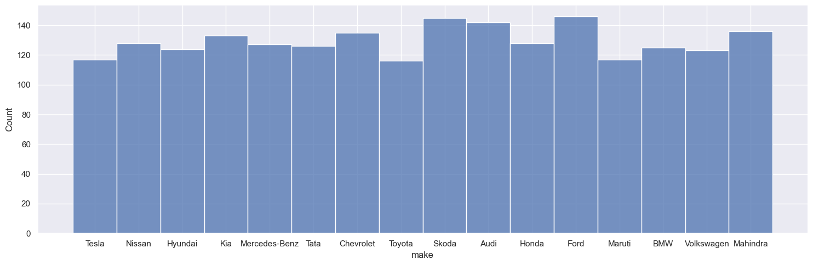

Car Sales
#Car Sales
#Link to source: https://www.kaggle.com/datasets/pratyushpuri/used-car-sales-listings-dataset-2025
import pandas as pd
import numpy as np
import matplotlib.pyplot as plt
import seaborn as sns
pd.set_option('display.max_columns', None)
df = pd.read_csv("data/used_car_listings.csv")
df.head()
.dataframe tbody tr th {
vertical-align: top;
}
.dataframe thead th {
text-align: right;
}
df.columns
Index(['listing_id', 'vin', 'make', 'model', 'year', 'trim', 'body_type',
'fuel_type', 'transmission', 'mileage', 'price', 'condition',
'location', 'seller_type', 'features'],
dtype='object')
#Checking if we have duplicated vins
df.duplicated('vin').sum()
0
df = df[[#'listing_id', 'vin',
'make', 'model',
'year', 'trim', 'body_type',
'fuel_type', 'transmission', 'mileage', 'price', 'condition',
'location', 'seller_type', 'features']].copy()
df.shape
(2068, 13)
df.dtypes
make object
model object
year int64
trim object
body_type object
fuel_type object
transmission object
mileage int64
price float64
condition object
location object
seller_type object
features object
dtype: object
df.describe()
.dataframe tbody tr th {
vertical-align: top;
}
.dataframe thead th {
text-align: right;
}
sns.pairplot((df))
<seaborn.axisgrid.PairGrid at 0x22755506360>

df.isna().sum()
make 0
model 0
year 0
trim 244
body_type 0
fuel_type 0
transmission 0
mileage 0
price 0
condition 46
location 0
seller_type 0
features 151
dtype: int64
df.loc[df.duplicated()]
.dataframe tbody tr th {
vertical-align: top;
}
.dataframe thead th {
text-align: right;
}
df['year'].value_counts()
year
2013 174
2020 173
2017 167
2021 161
2019 158
2014 151
2018 144
2015 142
2016 132
2012 128
2023 92
2024 90
2022 86
2025 79
2010 30
2006 29
2008 29
2007 28
2009 27
2011 25
2005 23
Name: count, dtype: int64
df['year'].value_counts()
year
2013 174
2020 173
2017 167
2021 161
2019 158
2014 151
2018 144
2015 142
2016 132
2012 128
2023 92
2024 90
2022 86
2025 79
2010 30
2006 29
2008 29
2007 28
2009 27
2011 25
2005 23
Name: count, dtype: int64
sns.countplot(x="year", data=df)
<Axes: xlabel='year', ylabel='count'>

df.query("year>2012")
.dataframe tbody tr th {
vertical-align: top;
}
.dataframe thead th {
text-align: right;
}
df['year'].value_counts()\
.head(10)\
.plot(kind='bar', figsize=(12, 6), color='skyblue',title="Top 10 Years of Cars",ylabel="count")
<Axes: title={'center': 'Top 10 Years of Cars'}, xlabel='year', ylabel='count'>

df["price"].plot(kind='hist', figsize=(12, 6), title="Price Distribution",bins=100,xlabel="price")
<Axes: title={'center': 'Price Distribution'}, xlabel='price', ylabel='Frequency'>
df["price"].plot(kind='kde', figsize=(12, 6), title="Price Distribution",xlabel="price",)
<Axes: title={'center': 'Price Distribution'}, ylabel='Density'>
df.plot(kind="scatter",x='year',y='price', figsize=(12, 6), title="Price vs Year",xlabel="year",ylabel="price")
plt.show()
sns.scatterplot(data=df, x='year', y='price', hue='body_type', alpha=0.5, palette='viridis')
<Axes: xlabel='year', ylabel='price'>

sns.displot(data=df, x='make',aspect=3)
#I cannot see any relationship between make and the chance of being sold, i could look for a model
<seaborn.axisgrid.FacetGrid at 0x2275304ab40>

sns.displot(data=df, x='make', hue='model', aspect=3)
<seaborn.axisgrid.FacetGrid at 0x22759c86660>

df_corr=df[["year","price","mileage"]].corr()
sns.heatmap(df_corr, annot=True)
<Axes: >

Interesitng Query questions: My favorite brand is Porsche is there any? if not what is the cheapest car in average to buy Link to heading
df.query("make=='Porsche'")
.dataframe tbody tr th {
vertical-align: top;
}
.dataframe thead th {
text-align: right;
}
df["price"].rank(method='dense',ascending=True).sort_values(ascending=True)
809 1.0
2013 2.0
386 2.0
269 3.0
1868 4.0
...
1927 1879.0
225 1880.0
731 1881.0
1008 1882.0
1478 1883.0
Name: price, Length: 2068, dtype: float64
df['model'].value_counts()
model
Model 3 60
Model Y 57
Octavia 56
Bolero 53
Slavia 48
..
Camry 17
Highlander 16
RAV4 15
Fortuner 14
Tacoma 12
Name: count, Length: 65, dtype: int64
df.groupby(["make","model"], as_index=False)["price"].mean().sort_values("price")
.dataframe tbody tr th {
vertical-align: top;
}
.dataframe thead th {
text-align: right;
}
Interesitng modeling questions: What is the statiscal relationship between milage and price and have a quick prediction model Link to heading
import re
import statsmodels.api as sm
endo = df[["mileage"]]
endo = sm.add_constant(endo)
reg = sm.OLS(df["price"],endo)
results = reg.fit()
print(results.summary())
OLS Regression Results
==============================================================================
Dep. Variable: price R-squared: 0.413
Model: OLS Adj. R-squared: 0.413
Method: Least Squares F-statistic: 1453.
Date: Wed, 20 Aug 2025 Prob (F-statistic): 3.07e-241
Time: 17:39:41 Log-Likelihood: -21423.
No. Observations: 2068 AIC: 4.285e+04
Df Residuals: 2066 BIC: 4.286e+04
Df Model: 1
Covariance Type: nonrobust
==============================================================================
coef std err t P>|t| [0.025 0.975]
------------------------------------------------------------------------------
const 1.833e+04 292.791 62.591 0.000 1.78e+04 1.89e+04
mileage -0.0791 0.002 -38.121 0.000 -0.083 -0.075
==============================================================================
Omnibus: 945.829 Durbin-Watson: 1.993
Prob(Omnibus): 0.000 Jarque-Bera (JB): 5480.664
Skew: 2.108 Prob(JB): 0.00
Kurtosis: 9.770 Cond. No. 2.46e+05
==============================================================================
Notes:
[1] Standard Errors assume that the covariance matrix of the errors is correctly specified.
[2] The condition number is large, 2.46e+05. This might indicate that there are
strong multicollinearity or other numerical problems.
Not Robust Analysis given the heteroskedasticity of my data and only utlising minimum variables, more variables can lower the effect of millage if they are more important to the buyer or can increase the value if other factors are more important
Given the right skew of my data and the fact of a big dropoff OLS is not recommended but I can determine that millage is for sure a negative impact on the price of the car.
You can see a funny interaction for every mile you drive you lose 7 cents of your car value.
Business Idea: Arbitrage Link to heading
Find the biggest variance in car prices within a model and location to maximize profit
# Make a new Column for Country
df["country"] = df["location"].apply(lambda x: str(x).split(",")[-1].strip() if pd.notnull(x) else np.nan)
keep_countries = ['US']
df = df[df["country"].isin(keep_countries)]
df = df.groupby(["model","year"])["price"].var().sort_values(ascending=False).dropna()
model year
X5 2021 115003778.0
F-150 2024 94765144.5
Rogue 2024 67384440.5
Model 3 2021 9856800.0
Octavia 2018 6993800.0
Sentra 2016 1212124.5
i20 2013 751538.0
Nexon 2025 476288.0
Bolero 2020 226464.5
Creta 2021 208012.5
Model Y 2021 204160.5
Kushaq 2011 177608.0
Sonata 2014 104424.5
F-150 2012 33024.5
Name: price, dtype: float64
df.groupby(["model", "year"])["price"].describe()
.dataframe tbody tr th {
vertical-align: top;
}
.dataframe thead th {
text-align: right;
}
49353.0